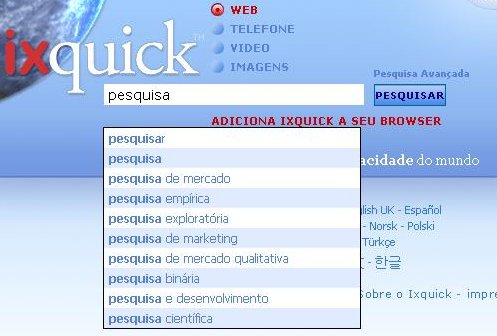

Configurações
O Gerador de URLs
Salvar configuraÇÕes sem cookies
O Ixquick continua oferecendo a você recursos de reforço da privacidade para pesquisar na Internet com segurança! |
Escolha o Seu Servidor para Pesquisar
|
Explicação das sugestões de pesquisa | ||
|
Q: Como faço para ativar as sugestões de pesquisa? A: Para ativar as sugestões de pesquisa, selecione‑as na página “Configurações”. A página “Configurações” pode ser selecionada em qualquer página do Ixquick. |  | |
|
Q: Como funcionam as sugestões de pesquisa do Ixquick? A: Quando você digita uma consulta, nós comparamos o termo da sua consulta a um grande conjunto de sugestões a partir de sugestões gerais, e os termos correspondentes mais populares são exibidos em ordem decrescente de popularidade. | ||
|
Q: Qual é a diferença entre as sugestões de pesquisa do Ixquick e as sugestões de outros mecanismos de pesquisa? A: A maioria dos outros mecanismos de pesquisa se baseia em pesquisas de usuários reais para fazer sugestões de pesquisa. Assim, apenas digitando sua consulta, você fica sabendo quais são as pesquisas feitas com mais frequência por outras pessoas. Por ser pioneiro na garantia da privacidade do usuário, o Ixquick não permite isso. Nós mostramos as sugestões de relevância geral para qualquer consulta que você faça. | ||
|
Q: Então qual é a procedência das sugestões do Ixquick? A: Nossas sugestões vêm de uma série de fontes que variam desde palavras do dicionário até páginas de interesse comum disponíveis gratuitamente na Internet como, por exemplo, páginas da Wikipédia. | ||
|
Q: As sugestões estão disponíveis em todos os idiomas? A: Sim, as sugestões estão disponíveis em todos os idiomas oferecidos pelo Ixquick. | ||
|
Q: O Ixquick também mostra sugestões pagas? A: Não. As sugestões se baseiam meramente na popularidade relativa. Não há publicidade. | ||
|
Q: Posso ver sugestões em inglês para certas palavras-chave enquanto estou usando o Ixquick em alemão, por exemplo? Por que isso acontece? A: O inglês é claramente o idioma predominante na Web. Nosso algoritmo primeiro retorna sugestões específicas ao seu idioma, mas, quando não há sugestões suficientes para sua pesquisa no idioma de sua preferência, oferecemos algumas sugestões em inglês. É claro que as sugestões no seu idioma são apresentadas primeiro. | ||
|
Q: Posso esperar ver sugestões personalizadas no futuro? A: Como é de seu conhecimento, não armazenamos informações pessoais de nossos usuários. Por essa razão, não podemos oferecer sugestões personalizadas, pois invadiria sua privacidade. | ||
|
Q: Não quero que meu filho receba sugestões de termos adultos. É possível assegurar isso? A: Claro. As sugestões funcionam em sincronia com suas configurações de filtro familiar para Internet/imagens. Se suas configurações de filtro estiverem definidas para filtrar resultados adultos durante a pesquisa, nosso algoritmo fará de tudo para não mostrar sugestões que contenham termos adultos. | ||
|
Q: Estou com minhas sugestões de pesquisa ativadas, mas não vejo sugestão alguma. Qual poderia ser a razão para isso? A: Verifique se o seu navegador está com o JavaScript ativado. Isso é necessário para que as sugestões de pesquisa funcionem. | ||
|
Q: Eu não uso “cookies”, ou os apago regularmente. Ainda assim posso usar a opção de sugestões de pesquisa? A: Sim, pode. Por ser um mecanismo de pesquisa que mantém a privacidade, criamos a opção “Gerar URL”, que permite salvar suas preferências em um URL, em vez de ter de usar um cookie. A opção “Gerar URL” aparece no canto inferior da página “Configurações”. |
||
O que são cookies? O Ixquick utiliza algum?
Um cookie é um pequeno dado que é enviado e salvo no disco rígido do seu computador quando você visita um site. O Ixquick usa apenas um cookie chamado "preferências". Esse cookie serve para lembrar as preferências de pesquisa salvas para a sua próxima visita. Ele perde a validade se você deixar de visitar o Ixquick durante 90 dias, e é anônimo.